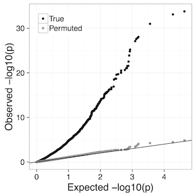

For a (hopefully) complete example of the complete pipeline, take a look at
example_data/worked_example.sh:warning: The test data download is 4Gb!
LeafCutter has two main components:
R code to
Of course the real “Step 0” is running QC on your RNA-seq samples using e.g. MultiQC. Assuming they look good you need to align reads. For the analysis in the LeafCutter paper we used either OLego, which is designed to be particularly sensitive for finding de novo junctions, or STAR, which is fast as long as you have enough RAM.
For OLego we used the command
olego -j hg19.intron.hmr.brainmicro.bed -e 6 hg19.fawhere -j provides a custom junction file, and -e specifies the required number of nt the read must extend into the exon to be quantified. For more details on the junction file we used see Li et al. 2005.
The STAR index was generated as
STAR --runMode genomeGenerate --genomeDir hg19index/ --genomeFastaFiles hg19.fa --sjdbGTFfile gencode_v19.gtf --sjdbOverhang 100(alternatively use one of the prebuilt indices ) and alignment itself was run (with STAR v2.5.2a) as
STAR --genomeDir hg19index/ --twopassMode --outSAMstrandField intronMotif --readFilesCommand zcat --outSAMtype BAMAs of STAR v2.5.3a you may need to do
STAR --genomeDir hg19index/ --twopassMode Basic --outSAMstrandField intronMotif --readFilesCommand zcat --outSAMtype BAM UnsortedWe chose 6nt as the default overhang required by LeafCutter. By chance we would expect one match every 46bp, or 4096bp, which appears to be quite likely for any given intron. However, RNA-seq mappers already deal with this problem by 1) assuring that the junction has already been previously annotated or is supported by reads with longer overhang (e.g. in STAR two-pass mode) 2) penalizing non-canonical junctions (i.e. non GT-AG junctions). The effect of the latter is that we would only expect one match every 48bp, or 65,536bp (just one or two every 100kb, the max size allowed for our introns). However, our most restrictive filter is the requirement that reads considered be uniquely mapped. Therefore, even when the overhang is just 6bp, there is no ambiguity in mapping. Moreover, junctions are rarely only supported by reads that have an overhang of 6, when the size of the overhang goes up to 7, 8, or 9nt, the probability that we see these by chance goes down to one in over 4 million bp (for 9nt).
bams to juncsWe now advise that users create junction files using the regtools software as it much faster than our own implementation.
regtools junctions extract uses the CIGAR strings in each bam file to quantify the usage of each intron.
For a discussion of the fine-grained details between regtools and our previous implementation see here.
example_data/worked_example.sh gives you an example of how to do this in batch, assuming your data is in example_geuvadis/
for bamfile in `ls run/geuvadis/*chr1.bam`; do
echo Converting $bamfile to $bamfile.junc
samtools index $bamfile
regtools junctions extract -a 8 -m 50 -M 500000 $bamfile -o $bamfile.junc
echo $bamfile.junc >> test_juncfiles.txt
doneHere -a 8 refers to the anchor length and -m and -M refer to the minimum and maximum intron lengths, respectively.
This step is pretty fast (e.g. a couple of minutes per bam) but if you have samples numbering in the 100s you might want to do this on a cluster. Note that we also make a list of the generated junc files in test_juncfiles.txt.
Next we need to define intron clusters using the leafcutter_cluster_regtools.py script. For example:
python ../clustering/leafcutter_cluster_regtools.py -j test_juncfiles.txt -m 50 -o testYRIvsEU -l 500000This will cluster together the introns fond in the junc files listed in test_juncfiles.txt, requiring 50 split reads supporting each cluster and allowing introns of up to 500kb. The predix testYRIvsEU means the output will be called testYRIvsEU_perind_numers.counts.gz (perind meaning these are the per individual counts).
You can quickly check what’s in that file with
zcat testYRIvsEU_perind_numers.counts.gz | more which should look something like this:
RNA.NA06986_CEU.chr1.bam RNA.NA06994_CEU.chr1.bam RNA.NA18486_YRI.chr1.bam RNA.NA06985_CEU.chr1.bam RNA.NA18487_YRI.chr1.bam RNA.NA06989_CEU.chr1.bam RNA.NA06984_CEU.chr1.bam RNA.NA18488_YRI.chr1.bam RNA.NA18489_YRI.chr1.bam RNA.NA18498_YRI.chr1.bam
chr1:17055:17233:clu_1 21 13 18 20 17 12 11 8 15 25
chr1:17055:17606:clu_1 4 11 12 7 2 0 5 2 4 4
chr1:17368:17606:clu_1 127 132 128 55 93 90 68 43 112 137
chr1:668593:668687:clu_2 3 11 1 3 4 4 8 1 5 16
chr1:668593:672093:clu_2 11 16 23 10 3 20 9 6 23 31Each column corresponds to a different sample (original bam file) and each row to an intron, which are identified as chromosome:intron_start:intron_end:cluster_id.
If you find this step is failing it could be due to non-standard chromosome names in your junction files. If this occurs then try adding the –checkchrom flag to the clustering command, which will remove any chromosomes not in the 1,2,3,4 or chr1,chr2,chr3,chr4 form.
We can now use our nice intron count file to do differential splicing (DS) analysis, but first we need a file to specify which samples go in each group, a groups_file. This is just a two column tab-separated file where the first column is the sample name (i.e. the filename of the ‘bam’) and the second is the grouping variable. These can be called anything: whichever occurs first will be considered as the baseline (unless the groups are numeric e.g. 0/1, in which case that order will be used, i.e. 0 will represent baseline). The command line interface currently only supports two groups.
For the worked example this file, example_geuvadis/groups_file.txt looks like this:
RNA.NA18486_YRI.chr1.bam YRI
RNA.NA18487_YRI.chr1.bam YRI
RNA.NA18488_YRI.chr1.bam YRI
RNA.NA18489_YRI.chr1.bam YRI
RNA.NA18498_YRI.chr1.bam YRI
RNA.NA06984_CEU.chr1.bam CEU
RNA.NA06985_CEU.chr1.bam CEU
RNA.NA06986_CEU.chr1.bam CEU
RNA.NA06989_CEU.chr1.bam CEU
RNA.NA06994_CEU.chr1.bam CEUHaving made that file we can run DS (this assumes you have successfully installed the leafcutter R package as described under Installation above)
../scripts/leafcutter_ds.R --num_threads 4 ../example_data/testYRIvsEU_perind_numers.counts.gz example_geuvadis/groups_file.txtRunning ../scripts/leafcutter_ds.R -h will give usage info for this script. Here have included an exon_file: this is optional but allows LeafCutter to annotate clusters according to which gene they correspond to. An example exon file for hg19 derived from GENCODE v19 is included with LeafCutter. The exons file should have the following columns: chr, start, end, strand, gene_name. We provide a helper script gtf_to_exons.R which will convert a .gtf to the required format. I’m also hosting the exon file for GRCh38 GENCODE v.31 here.
Two tab-separated text files are output:
leafcutter_ds_cluster_significance.txt. This shows per cluster p-values for there being differential intron excision between the two groups tested. The columns are
p.adjust( ..., method="fdr") in R to control FDR based on these.leafcutter_ds_effect_sizes.txt. This shows per intron effect sizes between the groups, with columns:
To control for confounders/covariates (e.g. batch, RIN) in the DS you can include them as additional columns in the groups_file file, after the sample names and two-group factor to be tested. Numeric values will be treated as such, so use non-numeric values if you want a categorical variable/factor, e.g. batch1, batch2 etc.
The Benjamini-Hochberg FDR control we use assumes p-values are well-calibrated, i.e. under the null hypothesis of no difference between conditions p-values are truly uniformly distributed. Our experiments suggest that at least down to 4 vs. 4 comparisons LeafCutter remains well calibrated. For example, the qq plot for 4 brain vs 4 muscle from the LeafCutter paper:

Proceed with caution if you have fewer than 4 samples per group. Such analyses can be performed changing the -i (minimum samples per intron) and -g (minimum samples per group) options in leafcutter_ds.R, e.g. -i 4 -g 2 for 2 versus 2 comparisons (default is currently -i 5 -g 3). In principle you could even do 1 vs. 1 comparisons, further discussion here.
If the precision of the FDR estimates are particularly important for your application it may be worth considering performing a permutation analysis. Currently you need to do this manually (e.g. by permuting the labeling in your groups_file) but if there is demand we’ll consider implementing permutations as a built-in feature. Note that in general permutation analysis doesn’t allow you to include confounders.
This will make a pdf with plots of the differentially spliced clusters detected at an FDR of 5%.
../scripts/ds_plots.R -e ../leafcutter/data/gencode19_exons.txt.gz ../example_data/testYRIvsEU_perind_numers.counts.gz example_geuvadis/groups_file.txt leafcutter_ds_cluster_significance.txt -f 0.05However, we find these plots somewhat hard to interpret. As a solution we provide a LeafCutter shiny app called leafviz allowing interactive visual interrogation of your results. Go to the Visualization tab to learn how to feed the LeafCutter output into the shiny app.